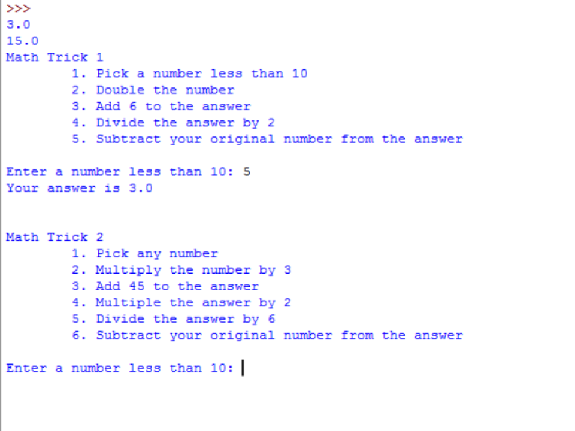
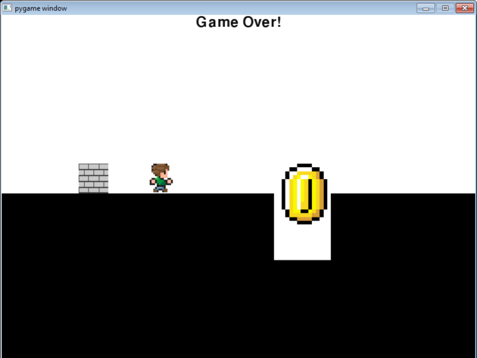
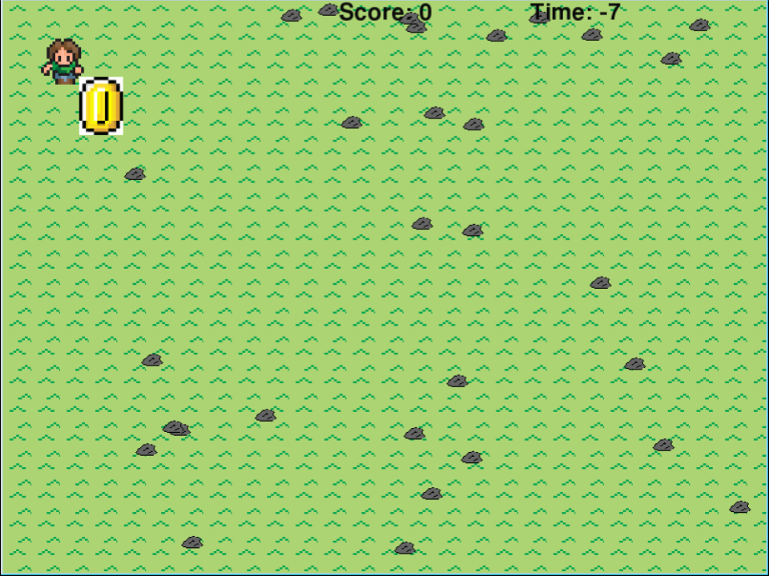
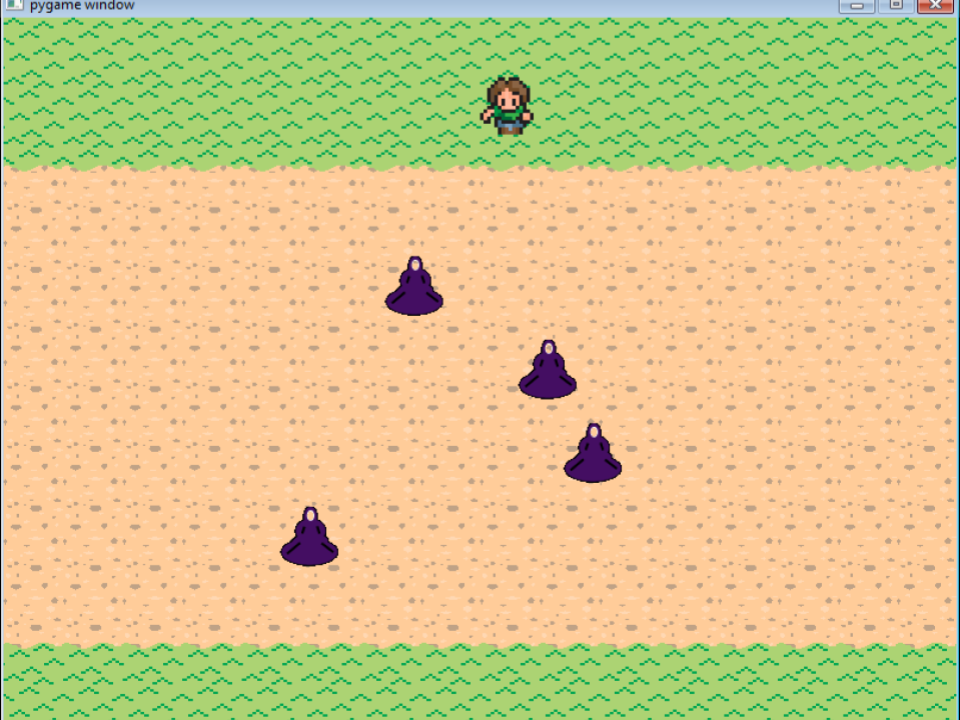
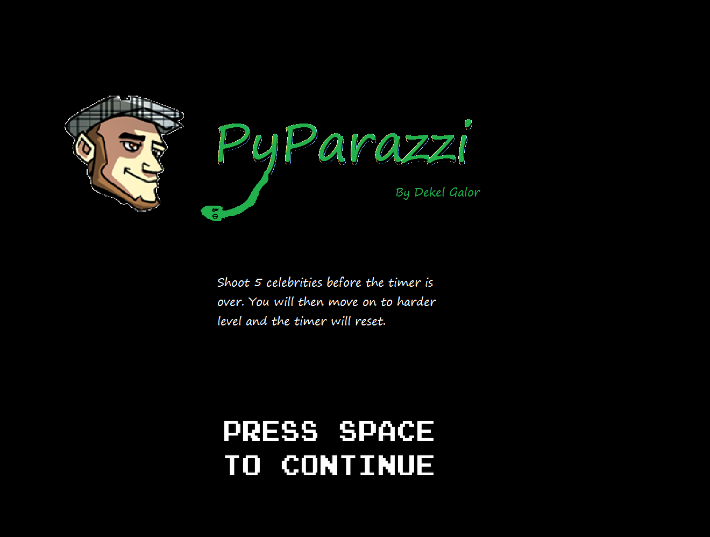
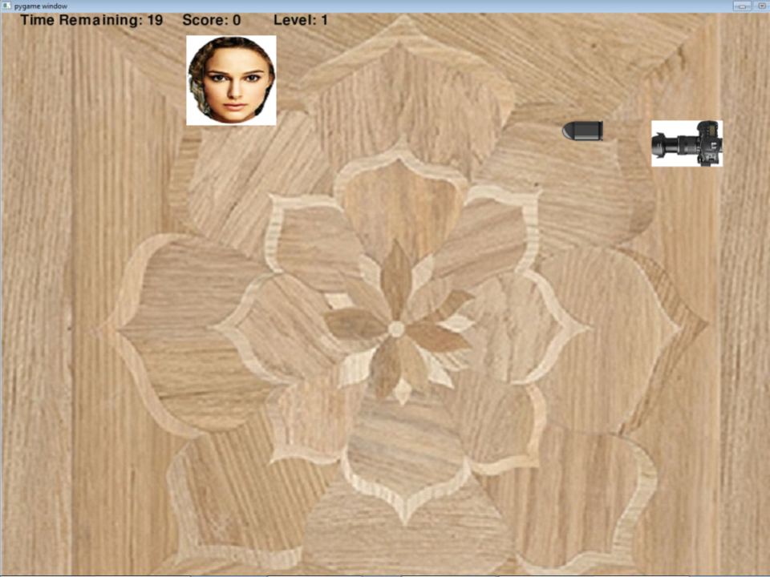

Unit 1 - Python Basics
Description: Unit 1 was all about learning the basic parts of python which you cannot code without. It was also a very brief intoduction to the world of pygame.

Variables Lab
Description
Write a program that takes user input and prints the results of several calculations.
Concepts Learned:
- Use placeholders in print statements.
- Use placeholders in print statements.
- Use the new kind of print() statements.
Math Tricks Lab
Description
Write a program that takes user input for a math trick and prints the answer.
Concepts Learned:
- Import a file from another file.
- Take a string such as “6” and convert it to an integer using the built-in int() function.
- Do math calculation in python using (*, %, +, -, /)
Moving Lab
Description
Write a class that creates an object and moves it around the screen.
Concepts Learned:
- Use pygame by first importing it at the top
- Create background and fill the screen with white.
- Draw to the screen using the draw method which uses window.blit().
- Initialize pygame before code.
- Create objects from an imported class.
Unit 2 - If Statements
Description: Unit 2 was about what are if statements and how to use them in prgrams such as in pygame games. This information enabled us to create more complex games with bollean variables.

Don’t Walk Off Lab
Description
Write a program that will prevent your person from walking off the screen.
Concepts Learned:
- Use an if statement inside a block of code that directs character movement to prevent it from moving while off screen.
- Use x and y in pygame.
- Use user input in pygame (keys).
Collide Lab
Description
Write a program that will prevent your person from walking through another object.
Concepts Learned:
- Use get_rect() to get a rectangle around objects for collision detection.
- Check if two rectangles are touching to see if objects are colliding
- Create a rectangle using get_rect()+length or width of image.
Running Man Lab
Description
Write a program that will allow hopper to jump a certain height before back coming down to the ground.
Concepts Learned:
- Realistically animate a character so a fake “gravity” applies.
- Use a count variable to tell the character when to stop jumping.
- Collision sensing with the wall.
Unit 3 - Loops
Description: Unit 3 talked about all kinds of loops, such as for and while loops. This enables us to process great amounts of data with a small amount of code.

Timer Lab
Description
Write a program that counts down seconds until it reaches 0.
Caeser Cipher
Description
Write a program that will build a cipher method that received 2 parameters.\n The first parameter is a String parameter. The second parameter will state how far\n to shift the alphabet that will be used to encode the String parameter.\n The String parameter is encoded using the Caesar Cipher algorithm based on the shifted alphabet String.
Squares and Circles Lab
Description
Write a program that draws shrinking squares and circles.
Tiles Lab
Description
Write a program that uses a grass tile to draw the ground and adds rocks at random points.
Unit 4 - Lists
Description: This unit was about creating, accessing and using lists. This enables us to create multiple objects that are controlled simultaniously as well as different costumes for each object.

Costume Change Lab
Description
Write a program that changes person’s image based on the direction it is moving.
Changing Ground Lab
Description
Write a program that uses different ground tiles to draw the ground.
Dodging Enemies Lab
Description
Write a program that uses lists to keep track of enemies on the screen.
Python Final Project


Description
In the game the player is a paparazzi photographer. The paparazzi is centered on the screen, and can rotate. Celebrities then start to appear around the paparazzi. They can move around the screen. You have to rotate your camera to aim, then take a photo of the celebrities, which causes them to disappear. To take a photo you click the spacebar to shoot. There will be three levels each with a timer. If the player doesn’t finish shooting all the celebrities before the timer goes off the game’s over. If the player scores more than required bonus points are added.
Characers
- Player - Paparazzi - can rotate clockwise by pressing right arrow and counterclockwise by pressing left. Shoots camera rounds when spacebar is pressed.
- Ammo - Camera bullet - Is shot by the PyParazzi when spacebar is pressed. Eliminates enemies in contact.
- Enemies - Celebrities - move around the screen by themselves and appear randomly in different places. Are deleted when shot by paparazzi.
Game Flow
The user can use the spacebar to shoot and the right and left arrows to rotate. The celebrities appear in random places with a random picture and move about the screen randomly. Each level has a timer that indicates the time left to eliminate a certain number of celebrities.. The levels get harder and harder. Your score is kept for the whole game. You can get bonus points each level if scored more than required. The score and timer variables are visible.